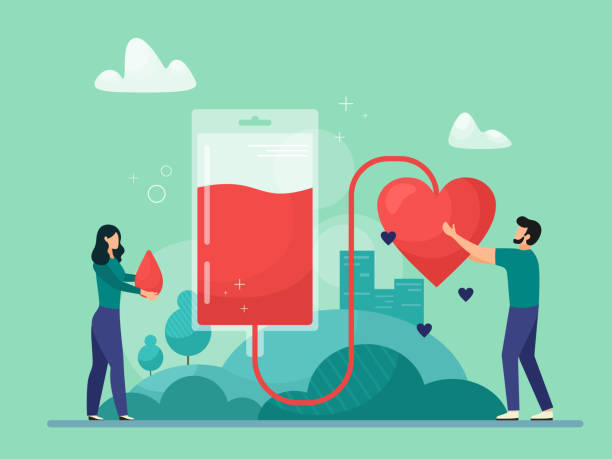

Why Donate?
Blood is essential to human life.
Every two seconds, a person in the US will need a blood transfusion. .
Blood cannot be synthetically replicated or produced, so there is no substitute. It is also perishable, with a unit of blood lasting only 42 days (and only 5 days for platelets). Because of this brief shelf life, there is a constant need for new volunteer donors. .
Volunteers may donate:
- Whole blood - This is the quickest, easiest, and most common type of donation
- Platelets - Blood cell fragments that help stop or prevent bleeding
- Plasma - The liquid portion of your blood that transports water and nutrients to body tissues
- Double Red Blood Cells - Red blood cells only
Although most of the US population is eligible to donate blood, only 3% of people do so on a regular basis. .
Sharing your blood, even if only once per year, may help patients of all ages, including heart surgery patients, trauma victims, and those battling cancer. .
In essence, blood saves lives.
